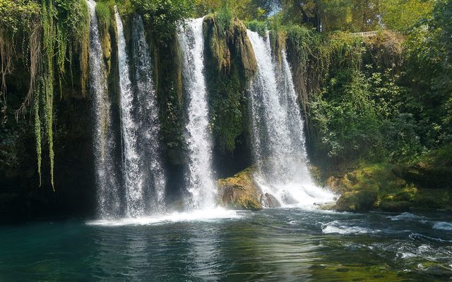

Startseite › Sehenswürdigkeiten nach Provinzen › Antalya
Der Kültür-Varlıkları-Führer verzeichnet 75 Orte in Antalya: 48 ausgrabungsstätte, 11 museum, 6 burg & historisches bauwerk, 3 wasserfall, 3 schlucht, 2 naturstätte, 1 sakralbau, 1 wanderweg. Unten finden Sie die Höhepunkte, eine Karte und die vollständige Liste.
⭐ Höhepunkte

1 · Antalya · AusgrabungsstätteAusgrabungsstätte Xanthos
Xanthos war die bedeutendste Stadt Lykiens und lange ihr Verwaltungszentrum.

2 · Antalya · MuseumMuseum Antalya
Das Antalya-Museum ist eines der umfassendsten archäologischen Museen der Türkei und vereint Schätze aus Pamphylien, Lykien und Pisidien.

3 · Antalya · AusgrabungsstätteAspendos
Aspendos am Köprüçay (antik Eurymedon) besitzt eines der besterhaltenen Theater der Antike.
🗺 Auf der Karte
📍 Alle Orte (75)
Ausgrabungsstätte (48)
Ausgrabungsstätte XanthosAusgrabungsstätte · UNESCOAspendosAusgrabungsstätte Ausgrabungsstätte PataraAusgrabungsstätte
Ausgrabungsstätte PataraAusgrabungsstätte Ausgrabungsstätte PergeAusgrabungsstätte
Ausgrabungsstätte PergeAusgrabungsstätte Ausgrabungsstätte SideAusgrabungsstätte
Ausgrabungsstätte SideAusgrabungsstätte Antike Stadt Antalya SyedraAusgrabungsstätte
Antike Stadt Antalya SyedraAusgrabungsstätte Antike Stadt Antiokheia ad CragumAusgrabungsstätte
Antike Stadt Antiokheia ad CragumAusgrabungsstätte Antiphellos Antik Tiyatrosu (Kaş)Ausgrabungsstätte
Antiphellos Antik Tiyatrosu (Kaş)Ausgrabungsstätte Antike Stadt AperlaiAusgrabungsstätte
Antike Stadt AperlaiAusgrabungsstätte Antike Stadt Apollonia (Likya)Ausgrabungsstätte
Antike Stadt Apollonia (Likya)Ausgrabungsstätte Antike Stadt AriassosAusgrabungsstätte
Antike Stadt AriassosAusgrabungsstätte Ausgrabungsstätte ArykandaAusgrabungsstätte
Ausgrabungsstätte ArykandaAusgrabungsstätte Antike Stadt IdebessosAusgrabungsstätte
Antike Stadt IdebessosAusgrabungsstätte Antike Stadt IotapeAusgrabungsstätte
Antike Stadt IotapeAusgrabungsstätte Versunkene Stadt KekovaAusgrabungsstätte
Versunkene Stadt KekovaAusgrabungsstätte Antike Stadt KitanauraAusgrabungsstätte
Antike Stadt KitanauraAusgrabungsstätte Antike Stadt KyaneaiAusgrabungsstätte
Antike Stadt KyaneaiAusgrabungsstätte Likya Uygarlıkları Müzesi ve Andrıake ÖrenyeriAusgrabungsstätte
Likya Uygarlıkları Müzesi ve Andrıake ÖrenyeriAusgrabungsstätte Ausgrabungsstätte LimyraAusgrabungsstätte
Ausgrabungsstätte LimyraAusgrabungsstätte Ausgrabungsstätte MyraAusgrabungsstätte
Ausgrabungsstätte MyraAusgrabungsstätte Ausgrabungsstätte OlymposAusgrabungsstätte
Ausgrabungsstätte OlymposAusgrabungsstätte Ausgrabungsstätte PhaselisAusgrabungsstätte
Ausgrabungsstätte PhaselisAusgrabungsstätte Antike Stadt PhellosAusgrabungsstätte
Antike Stadt PhellosAusgrabungsstätte Antike Stadt RhodiapolisAusgrabungsstätte
Antike Stadt RhodiapolisAusgrabungsstätte Antike Stadt SebedaAusgrabungsstätte
Antike Stadt SebedaAusgrabungsstätte Antike Stadt Seleukeia (Pamfilya)Ausgrabungsstätte
Antike Stadt Seleukeia (Pamfilya)Ausgrabungsstätte Antike Stadt SelgeAusgrabungsstätte
Antike Stadt SelgeAusgrabungsstätte Antike Stadt SelinusAusgrabungsstätte
Antike Stadt SelinusAusgrabungsstätte Antike Stadt SillyonAusgrabungsstätte
Antike Stadt SillyonAusgrabungsstätte Ausgrabungsstätte SimenaAusgrabungsstätte
Ausgrabungsstätte SimenaAusgrabungsstätte Antike Stadt SuraAusgrabungsstätte
Antike Stadt SuraAusgrabungsstätte Antike Stadt TeimiussaAusgrabungsstätte
Antike Stadt TeimiussaAusgrabungsstätte Ausgrabungsstätte TermessosAusgrabungsstätte
Ausgrabungsstätte TermessosAusgrabungsstätte Antike Stadt TrebennaAusgrabungsstätte
Antike Stadt TrebennaAusgrabungsstätte Antike Stadt TrysaAusgrabungsstätte
Antike Stadt TrysaAusgrabungsstätte Antike Stadt TyberissosAusgrabungsstätte
Antike Stadt TyberissosAusgrabungsstätte Öküzini-HöhleAusgrabungsstätteAntike Stadt AkalissosAusgrabungsstätteAntike Stadt ArneaiAusgrabungsstätteBeldibi-HöhleAusgrabungsstätteAntike Stadt EtennaAusgrabungsstätteAntike Stadt GagaeAusgrabungsstätteAntike Stadt IsindaAusgrabungsstätteAntike Stadt KandybaAusgrabungsstätteAntike Stadt KorydallaAusgrabungsstätteAntike Stadt LamosAusgrabungsstätteAntike Stadt PednelissosAusgrabungsstätteAntike Stadt İdyrosAusgrabungsstätte
Öküzini-HöhleAusgrabungsstätteAntike Stadt AkalissosAusgrabungsstätteAntike Stadt ArneaiAusgrabungsstätteBeldibi-HöhleAusgrabungsstätteAntike Stadt EtennaAusgrabungsstätteAntike Stadt GagaeAusgrabungsstätteAntike Stadt IsindaAusgrabungsstätteAntike Stadt KandybaAusgrabungsstätteAntike Stadt KorydallaAusgrabungsstätteAntike Stadt LamosAusgrabungsstätteAntike Stadt PednelissosAusgrabungsstätteAntike Stadt İdyrosAusgrabungsstätteMuseum (11)
Museum AntalyaMuseum Museum AlanyaMuseum
Museum AlanyaMuseum Atatürk-Haus-Museum AntalyaMuseum
Atatürk-Haus-Museum AntalyaMuseum Ethnografisches Museum AntalyaMuseum
Ethnografisches Museum AntalyaMuseum Museum Antalya OyuncakMuseum
Museum Antalya OyuncakMuseum Denkmalmuseum Aziz (St.) NikolaosMuseum
Denkmalmuseum Aziz (St.) NikolaosMuseum Museum SideMuseumAtatürk-Haus-Museum AlanyaMuseumMuseum Antalya NekropolMuseumMuseum ElmalıMuseumMuseum MevlevihaneMuseum
Museum SideMuseumAtatürk-Haus-Museum AlanyaMuseumMuseum Antalya NekropolMuseumMuseum ElmalıMuseumMuseum MevlevihaneMuseumBurg & historisches Bauwerk (6)
 Burg AlanyaBurg & historisches Bauwerk
Burg AlanyaBurg & historisches Bauwerk AlarahanBurg & historisches Bauwerk
AlarahanBurg & historisches Bauwerk Hadrian KapısıBurg & historisches Bauwerk
Hadrian KapısıBurg & historisches Bauwerk Köprüpazar (Aspendos)-BrückeBurg & historisches Bauwerk
Köprüpazar (Aspendos)-BrückeBurg & historisches Bauwerk KızılkuleBurg & historisches Bauwerk
KızılkuleBurg & historisches Bauwerk Karawanserei ŞarapsaBurg & historisches Bauwerk
Karawanserei ŞarapsaBurg & historisches BauwerkWasserfall (3)
 Düden ŞelaleleriWasserfall
Düden ŞelaleleriWasserfall
Naturpark Kurşunlu-WasserfallWasserfall Manavgat-WasserfallWasserfall
Manavgat-WasserfallWasserfall